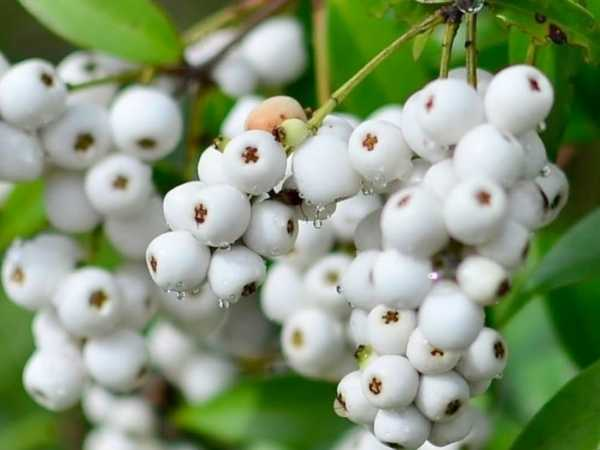

Syzygium zeylanicum
Common Names: Cat Eye Fruit, Ceylon Syzygium, Wild Jamun
Local Name: Puli Nondi (Tamil), Neer Naval (Tamil)
Family: Myrtaceae
Origin: Sri Lanka, South India, Southeast Asia
Plant Type: Perennial evergreen tree
Average Lifespan: 50–80 years
| Growth Habit | Medium-sized evergreen tree with dense canopy |
| Plant Size | 8–15 meters tall |
| Leaves | Opposite, elliptic-oblong, glossy dark green; 6–12 cm long |
| Flowers | White, fluffy, fragrant; in terminal or axillary panicles |
| Fruit | Oval to globose, 1–2 cm; resembles a cat's eye; fleshy |
| Fruit Color | White to pinkish-red when ripe; distinctive eye-like marking |
| Seed Characteristics | Single seed; large relative to fruit size |
| Root System | Deep taproot; well-anchored |
| Climate | Tropical; humid conditions preferred |
| Temperature Range | 22–35°C |
| Rainfall Requirement | 1500–3000 mm annually |
| Soil Type | Well-drained loamy to laterite soil |
| Soil pH Preference | 5.5–7.0 |
| Sun Requirement | Full sun to partial shade |
| Spacing | 5–8 meters between trees |
| Water Requirement | Moderate to high |
| Can it Grow in Pots? | Not suitable; needs open ground |
| Fertilizer Schedule | Twice yearly; compost and organic matter |
| Common Pests | Fruit flies, bark borers |
| Common Diseases | Leaf spot, anthracnose |
| Flowering Months | March–May |
| Fruiting Season | June–August |
| Pollination Type | Insect-pollinated; bees |
| Propagation by Seeds | Fresh seeds germinate in 2–4 weeks; recalcitrant — plant immediately |
| Biodiversity Benefits | Fruits attract birds; supports local wildlife |
Add your field observations here.